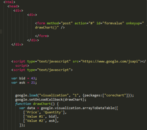

JavaScript (English: JavaScript) is an object-based script programming language. This language is primarily used within web browsers and has the ability to access built-in objects in other applications. It is also used in server programming, such as runtime environments such as Node.js. JavaScript was originally developed by Brendan Eich of Netscape Communications Corporation under the name Mocha and later as LiveScript, which ultimately became JavaScript.
Although JavaScript has some similarities in syntax with Sun Microsystems' Java, this is because both languages are based on the basic syntax of the C language, and the direct relationship between Java and JavaScript is weak. Other than the name and syntax, it has more similarities to Self or Scheme than to Java. JavaScript is recognized as the language that best implements the standard specifications of ECMAScript, and was supported by default in most browsers until ECMAScript 5 (ES5), but from ECMAScript 6 onwards, it is compiled with a transpiler for browser compatibility. [ 4]